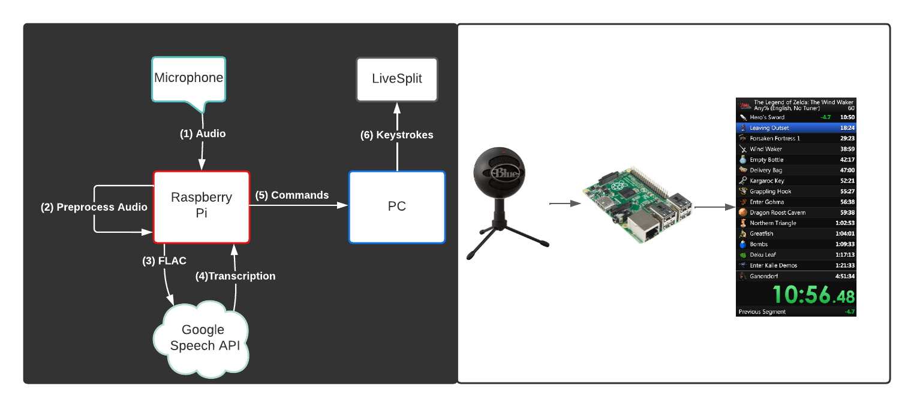
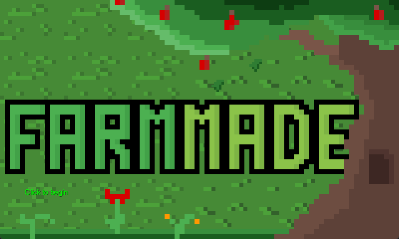

Pygame Tetris

Teaching python with tetrominoes!
Audiosplit

Hands-free keystrokes with your voice
OneWeb
OneWeb Satellite Megaconstellation
Career Tracker
MEAN stack career developement site
Farmmade

LibGDX/Java Game From Scratch
Defrag Gallery

Tinder swiping for your photo bin!
Poor Man's Spotify

I was pretty frugal...
SimplePlayer
A-Level Compsci project
Hours of Tunes
Visualising music for views